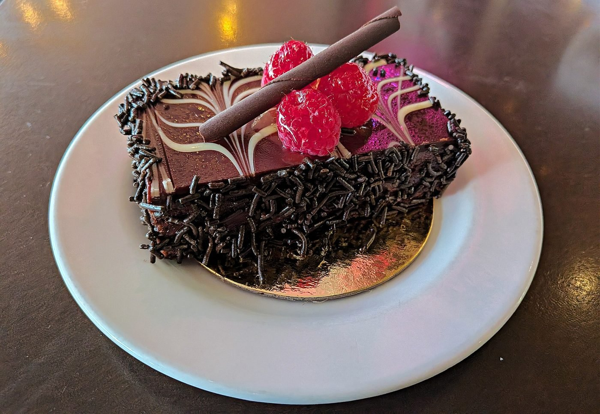
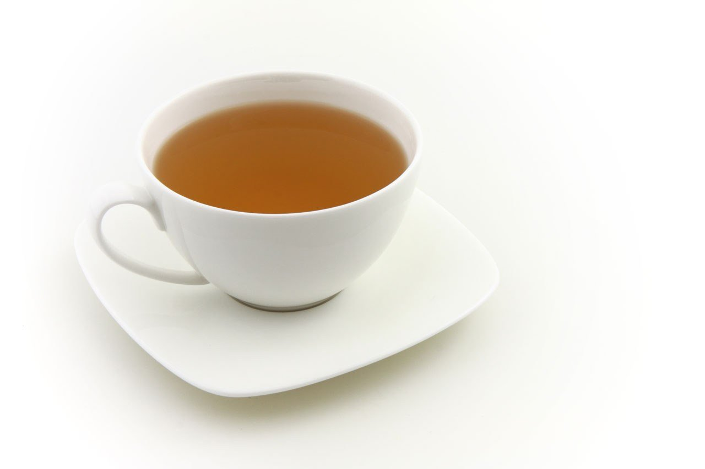
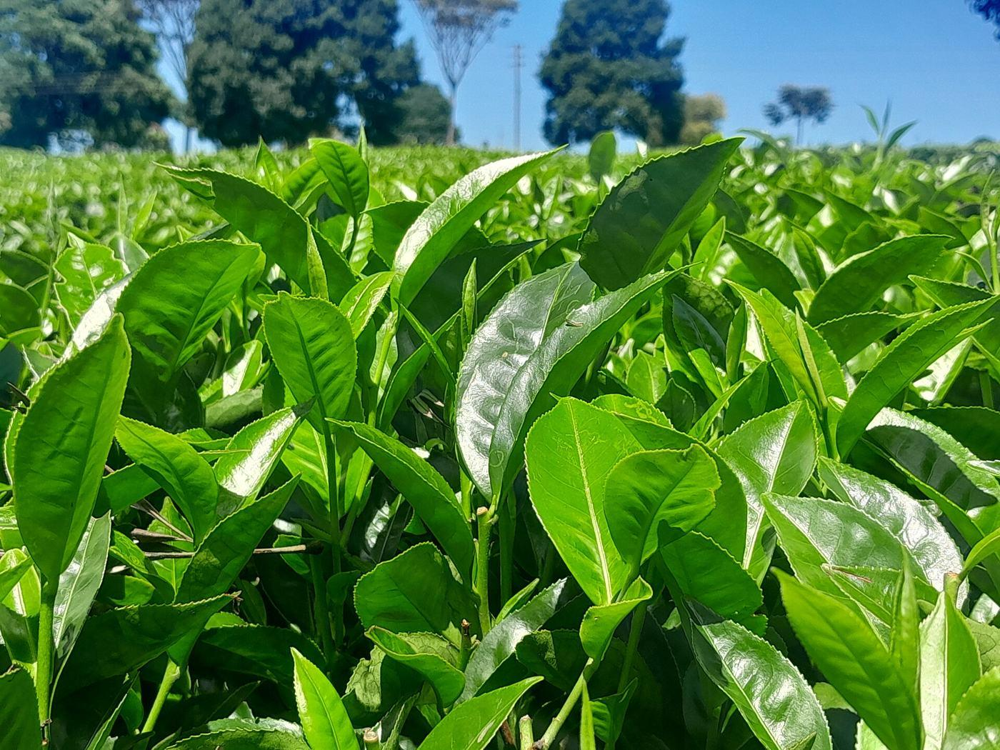

おひるごはん
日替わりで、数量限定。内容は準備中です。
価格:準備中ABOUT
諫早市泉町にあるカフェです。素材にこだわった手作りの味わいを、くつろいで過ごせる空間でいただけます。
木目調の店内には外光がやわらかく差し込み、カウンター席とソファ席があります。ランチは長田産のお米を使った和風の手作りご飯が日替わり(数量限定)。午後はオリジナルのスイーツでティータイムを。
お一人でも、ご家族連れでも、ペット連れでもと紹介されています。
店名の意味など、確認できていないことは掲載していません。営業時間・定休日・お電話は準備中です。

MENU
詳細・価格は準備中です。以下は雰囲気のイメージです。
日替わりで、数量限定。内容は準備中です。
価格:準備中
午後のティータイムに。種類は準備中です。
価格:準備中
やさしい味わいのおやつ。内容は準備中です。
価格:準備中
食後にも、おやつにも。種類は準備中です。
価格:準備中
ティータイムのお供に。種類は準備中です。
価格:準備中
季節の一杯。内容は準備中です。
価格:準備中



VOICE
木の色がやさしくて、窓の光がきれいな席でした。おひるごはんでほっとしました。
午後のケーキとお茶の時間がゆったり流れて、つい長居してしまいました。
ひとりでも入りやすく、カウンター席で静かに過ごせました。
この口コミは制作側が作成したイメージ例であり、実在のお客様の声ではありません。
掲載写真はフリー素材のイメージで、店舗の実際の様子ではありません。